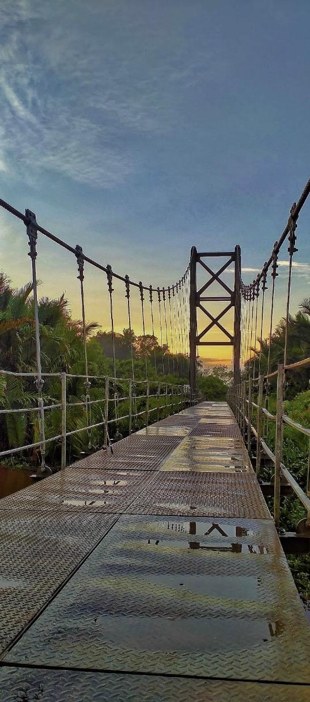

Susur sungai
Tiga dusun, satu aliran
DUSUN 1
Kartini
Titik masuk desa dari arah kecamatan — pusat kegiatan warga dan lalu lintas harian menuju balai desa.

DUSUN 2
Mulia
Dikenal lewat jembatan gantung yang melintasi Sungai Seburing — pemandangan matahari terbenam dari atas jembatan jadi favorit warga.

DUSUN 3
Makmur
Wilayah yang lebih tenang di sisi desa, dengan permukiman rapat di tepi air dan suasana kekeluargaan yang kental untuk keluarga muda.